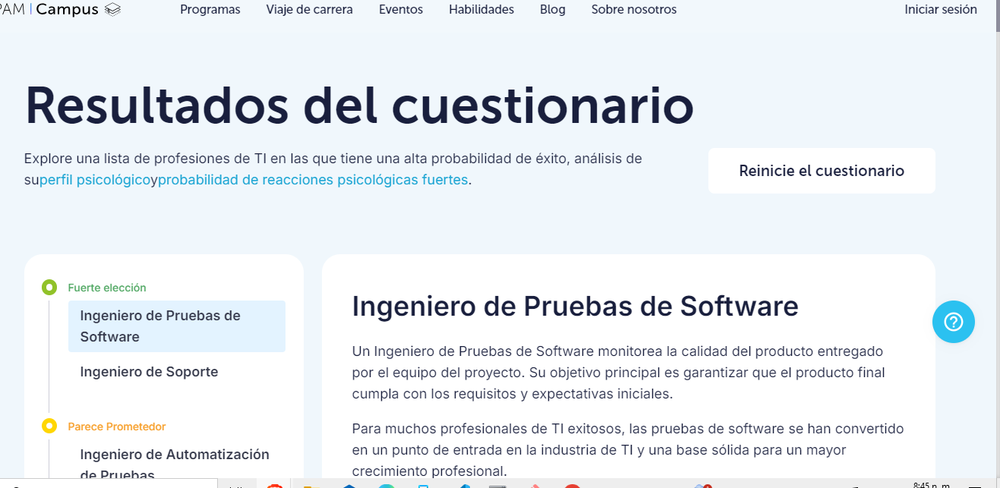
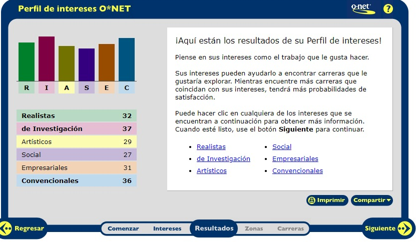

Ver pdf
import math
# Definir los jugadores
HUMANO = -1
COMPUTADORA = 1
# Crear el tablero vacío
tablero = [
[0, 0, 0],
[0, 0, 0],
[0, 0, 0]
]
# Función para verificar si hay un ganador
def ganador(tablero, jugador):
win_state = [
[tablero[0][0], tablero[0][1], tablero[0][2]],
[tablero[1][0], tablero[1][1], tablero[1][2]],
[tablero[2][0], tablero[2][1], tablero[2][2]],
[tablero[0][0], tablero[1][0], tablero[2][0]],
[tablero[0][1], tablero[1][1], tablero[2][1]],
[tablero[0][2], tablero[1][2], tablero[2][2]],
[tablero[0][0], tablero[1][1], tablero[2][2]],
[tablero[2][0], tablero[1][1], tablero[0][2]],
]
return [jugador, jugador, jugador] in win_state
# Función para verificar si el tablero está lleno
def tablero_lleno(tablero):
for fila in tablero:
if 0 in fila:
return False
return True
# Evaluar el estado del tablero
def evaluar(tablero):
if ganador(tablero, COMPUTADORA):
return 1
elif ganador(tablero, HUMANO):
return -1
else:
return 0
# Algoritmo Minimax
def minimax(tablero, profundidad, jugador):
if ganador(tablero, COMPUTADORA):
return 1
if ganador(tablero, HUMANO):
return -1
if tablero_lleno(tablero):
return 0
if jugador == COMPUTADORA:
mejor = -math.inf
for i in range(3):
for j in range(3):
if tablero[i][j] == 0:
tablero[i][j] = COMPUTADORA
mejor = max(mejor, minimax(tablero, profundidad + 1, HUMANO))
tablero[i][j] = 0
return mejor
else:
peor = math.inf
for i in range(3):
for j in range(3):
if tablero[i][j] == 0:
tablero[i][j] = HUMANO
peor = min(peor, minimax(tablero, profundidad + 1, COMPUTADORA))
tablero[i][j] = 0
return peor
# Movimiento de la computadora
def movimiento_computadora(tablero):
mejor_movimiento = None
mejor_valor = -math.inf
for i in range(3):
for j in range(3):
if tablero[i][j] == 0:
tablero[i][j] = COMPUTADORA
valor = minimax(tablero, 0, HUMANO)
tablero[i][j] = 0
if valor > mejor_valor:
mejor_valor = valor
mejor_movimiento = (i, j)
return mejor_movimiento
# Imprimir el tablero
def imprimir_tablero(tablero):
for fila in tablero:
print(fila)
# Simulación de juego
def juego():
while True:
imprimir_tablero(tablero)
if tablero_lleno(tablero):
print("Empate!")
break
# Movimiento del humano
fila = int(input("Introduce la fila (0, 1, 2): "))
col = int(input("Introduce la columna (0, 1, 2): "))
if tablero[fila][col] == 0:
tablero[fila][col] = HUMANO
else:
print("Movimiento no válido, intenta de nuevo.")
continue
if ganador(tablero, HUMANO):
imprimir_tablero(tablero)
print("¡Has ganado!")
break
# Movimiento de la computadora
movimiento = movimiento_computadora(tablero)
tablero[movimiento[0]][movimiento[1]] = COMPUTADORA
if ganador(tablero, COMPUTADORA):
imprimir_tablero(tablero)
print("La computadora ha ganado.")
break
# Iniciar el juego
juego()
Explorar nuevas herramientas de trabajo, como Google Colab, representa una valiosa experiencia. Nos brinda desafíos y conocimientos que son fundamentales para el desarrollo de nuestras carreras profesionales.